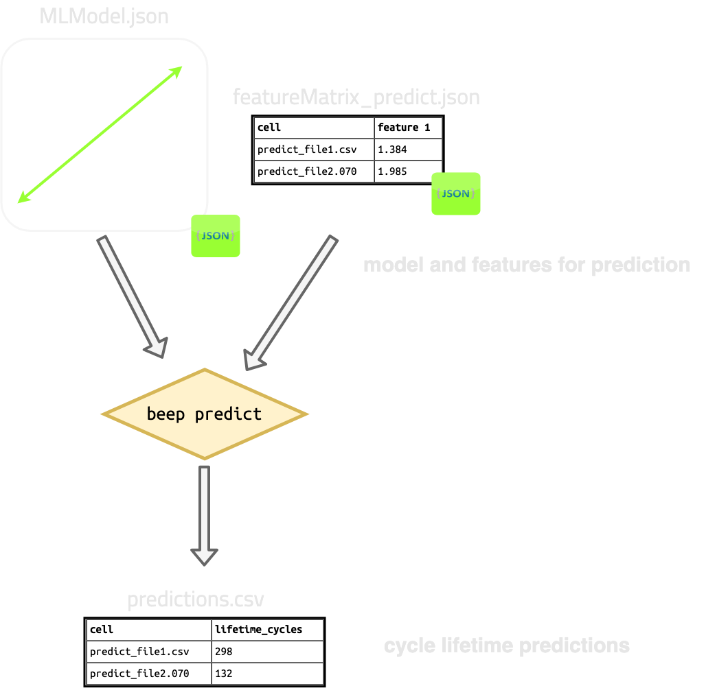

Predict¶
beep predict runs previously trained models to predict degradation
characteristics based on a new input feature matrix.
beep predict takes in a previously trained model json file (e.g., trained
with beep train and a previously
generated feature matrix (e.g., generated
with beep featurize) which
you want ML predictions for. Each row in this input dataframe corresponds to a
single cycler file.
The output is a dataframe of predictions of degradation characteristics for each file, serialized to disk as json. For example:
target_matrix
predicted capacity_0.92::TrajectoryFastCharge
filename
file1_to_predict 287
file2_to_predict 59
file3_to_predict 82
file4_to_predict 103

Predict help dialog¶
$: beep predict --help
Usage: beep predict [OPTIONS] MODEL_FILE
Run a previously trained model to predict degradation targets.The MODEL_FILE
passed should be an output of 'beep train' or aserialized
BEEPLinearModelExperiment object.
Options:
-fm, --feature-matrix-file TEXT
Feature matrix to use as input to the model.
Predictions are basedon these features.
[required]
-o, --output-filename FILE Filename (json) to write the final predicted
dataframe to.
--predict-sample-nan-thresh FLOAT
Threshold to keep a sample from any
prediction set.
--help Show this message and exit.
Specifying inputs¶
beep predict requires two files as input:
- A previously trained model file, which can be generated with
beep trainor in python viaBEEPLinearModelExperiment. - A feature matrix file of features for new files for which you want degradation predictions
- The feature matrix file must have at least the features required by the trained model. Extra features will be automatically dropped.
The single model file is specified with the required argument MODEL_FILE (no globs) and the feature matrix is specified with --feature-matrix-file/-fm.
For example:
Specifying output¶
The output is a single serialized dataframe, which is by default auto-named but can be overridden by --output-filename/-o.